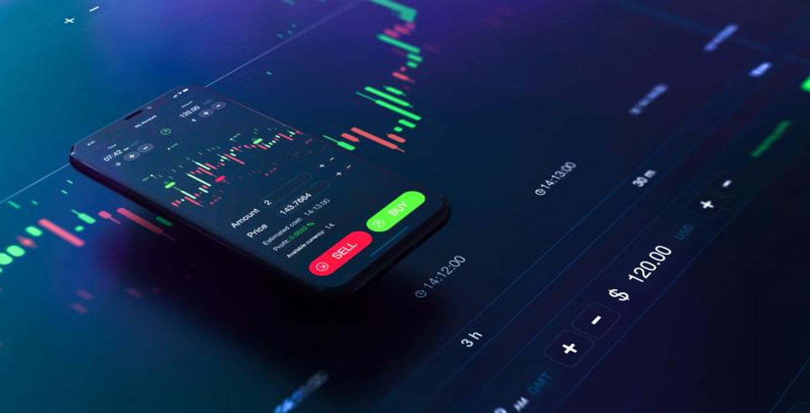
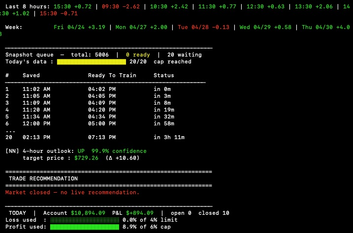
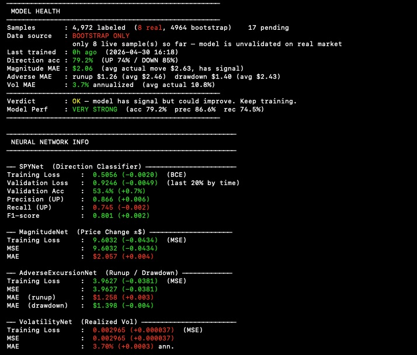

Four neural networks analyze SPY options data to predict short-term price direction, magnitude, volatility, and risk, then automatically select, size, and log the optimal options trade.

Overview
Built a pipeline that pulls live SPY quotes and options chain data from Yahoo Finance, runs four specialized neural networks to predict price direction, magnitude, volatility, and adverse excursion, and logs trade recommendations within defined risk parameters. Strategy logic is trained on 24 months of bootstrapped historical data before live deployment, and a JSONL-based store logs every snapshot, signal, trade, and P&L estimate for post-session review.
Technologies
Python · Pandas · NumPy · Alpaca Markets API · Backtrader · PostgreSQL · Docker · cron scheduling · Matplotlib (reporting) · TA-Lib (technical indicators)
Outcome
Validated directional accuracy above 65% on held-out SPY options data across 24 months of bootstrap training, with daily drawdown capped at 4% and a 3:2 reward-to-risk ratio enforced by the risk manager. Ran live paper trading during market hours with Black-Scholes exit pricing and four-network ensemble inference, confirming stable predictions within expected magnitude error bounds.


Left: the model's preformance dashboard displaying daily profit and loss, tracking on individual trades, data intake, and neural network based market analysis. Right: The four neural networks share a dashboard that displays their learning preformance across various statisics, using color for quick indication to ensure the predictions are sound.
Backtesting
During the development of the model backtesting was added to gain more data on the neural network's preformance spending real time in the market. The backtesting the model ran on was over 30 and 90 day periods and was signifigantly impactful when fine tuning the model.
Edits to the adjacent section
Make the picture take up about 40% of the section and the text should take up the other 60% of the screen real estate, they should be on separate panels tho